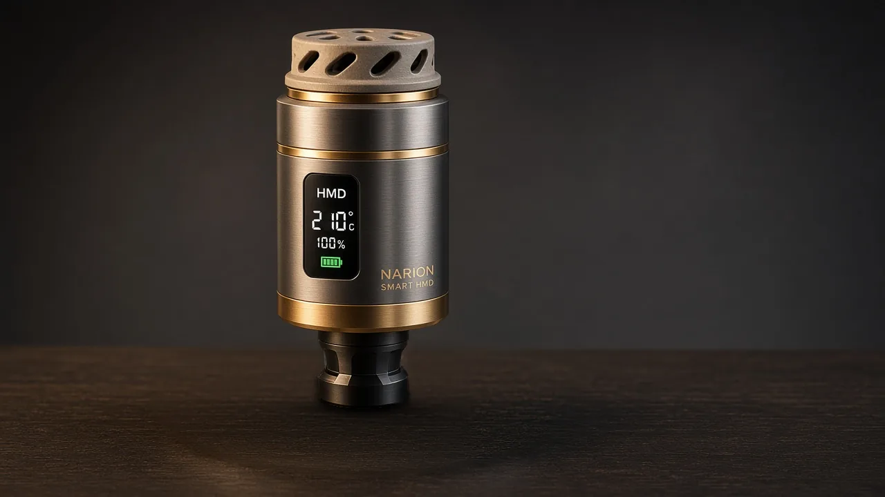

Közün Ötesinde
Bir Başyapıt.
Doğu'nun 500 yıllık duman ritüeli, havacılık mühendisliği ve akıllı seramik ısıyla yeniden doğdu. Yanan kömürün baş ağrısı ve külü geride kaldı; yerini 0 ppm Karbonmonoksit ve tütünün en saf aromatik notalarına bıraktı.

0.0 ppm Sıfır Karbonmonoksit
Kömür yanmasını tamamen ortadan kaldıran Al₂O₃ MCH seramik ısıtıcı; baş ağrısı yapmaz, kül bırakmaz ve 3,5–4,5 dakikada tütünü yakmadan 150°C–240°C hedef ısıda demler.
90 Dakika Kesintisiz Seans (2,36 ₺)
14.8V değiştirilebilir lityum batarya modülü ile masada kablo karmaşası olmadan 90 dakika sabit ısı sağlar. Yedek batarya 3 saniyede değiştirilir.
Halı & Koltuk Yanıklarına Son!
Nargile devrilse bile açılmayan N52 neodimyum mıknatıslı kilit ve 45° paslanmaz çelik bayonet yaka ile evde ve kafede %100 yangın güvenliği sağlar.
Kafede Köz & Personel Masrafına,
Evde Halı Yanıklarına Son!
Her 20 Dakikada Bir Değişen Kömüre ve Közcüye Giden Servet Kasanızda Kalsın!
Salon Halısı & Koltuk Yanıklarına, Mutfakta 2 Kez Cezve Yakmaya Son!
Her 20 Dakikada Bir Köz Taşıma, Kanda 3× COHb & Yanık Riski
- ✗ Nefeste 9× CO / Kanda 3× COHb: Klinik deneylerde kanıtlandığı üzere nargiledeki ağır karbonmonoksitin kaynağı tütün değil, üstünde yanan kömürdür!
- ✗ Kafede Ayda 1.000 Saat Zaman Kaybı: 1,5–2 saatlik seansta her 20 dk'da bir (5–6 kez) maşayla köz yenileme (ayda 15.000 tur!).
- ✗ Halı, Parke ve L Koltuk Yanıkları: Devrilen nargileden veya maşadan düşen kor ateşin verdiği 30.000 ₺+ hasar.
- ✗ Ağır Maliyet: Kafede ayda 97.200 ₺ kömür + 80.000 ₺ közcü maaşı; evde seansı 39 ₺ sarf gideri.
5 Saniyede Hazır, 0.0 ppm Kömürsüz Saf Lezzet & Sıfır Yanık Riski
- ✓ 0.0 ppm Sıfır Karbonmonoksit: Kömür yanması tamamen kalktığı için kömür kaynaklı CO sıfırlanır; baş ağrısız saf aroma.
- ✓ Garson 5 Saniyede Pil Takar: 20 dk'da bir köz taşıma biter; ayda 1.000 saat personel emeği kurtulur.
- ✓ Halı & Koltuk Yanıklarına Son: N52 mıknatıs kilit ve kapalı seramik çekirdek ile kor ateş ve kül sıfırlanır.
- ✓ Seansı Sadece 28–50 Kuruş Elektrik: Kafede ayda +213.100 ₺, evde yılda +22.580 ₺ net tasarruf!
Seri 01,
Harekette.
Seri 01'in silueti, bayonet mekanizması ve Smart HMD başlığı — yirmi saniyelik sessiz bir bakış.
Smart HMD: Tasarımda Sıfır Taviz
Geleneksel nargilelerdeki kömür zehrini, köz yakma zahmetini ve masa/halı yanıklarını ortadan kaldıran 3 temel mühendislik imzası.
0.0 ppm Karbonmonoksit
Akıllı MCH seramik rezistans ve PID (±1°C) kontrolü, tütünü yakmadan ideal buharlaşma sıcaklığında tutar. Baş ağrısı, yanık tadı ve kül kokusu olmadan yalnızca saf aromayı deneyimlersiniz.
Bilimsel Rapor →5 Saniyede Hot-Swap Güç
Sıcak lüleye dokunmadan, çeyrek tur bayonet kilitle 5 saniyede değiştirilebilen modüler 14.8V batarya kartuşu. Seansınız hiç bölünmeden 90+ dakika kesintisiz devam eder.
Maliyet & ROI Analizi →N52 Manyetik Kilit & Sensör
Nefes çekişinizi algılayarak anlık güç veren Smart Draw Boost sensörü ve devrilme anında bile açılmayan N52 neodimyum manyetik güvenlik kilidi ile %100 yanmaz güvenlik.
Kafe Çözümleri →İkonik Üçleme: Koza, Ladin, Manolya
Bugün el işçiliği kristal cam ve masif ahşapla geleneksel nargile zirvesini yaşayın; standart 45° Bayonet & Smart HMD Ready üst mimari sayesinde akıllı lüle çıktığı gün takımınızı değiştirmeden 3 saniyede elektrikli ekosisteme geçin.
NARION KOZA
Doğal masif ceviz ahşap panel, kalın cidarlı kristal cam su haznesi, PVD kaplama çelik omurga ve Smart HMD tam uyumluluğu.
NARION LADİN
Fırçalanmış masif meşe dokusu, el işçiliği kristal cam hazne, dikey tahliye kanalları ve akustik sessiz difüzör sistemiyle salonların gözdesi.
NARION MANOLYA
Eloksallı havacılık alüminyumu ve 360 derece görünür el işçiliği kristal cam hazne. Fütüristik çizgiler ve saf çekiş ergonomisi.
Gelecek Faz: Eastman Tritan™ Kırılmaz Polimer Şişe Opsiyonu
Seri 01 nargile takımlarımız şu an El İşçiliği Kristal Cam Hazne ile üretilmektedir. Yüksek enjeksiyon kalıp yatırımı gerektiren kırılmaz Eastman Tritan™ TX1001 polimer hazne opsiyonumuz ise Sonraki Proje (Faz 2 Ar-Ge) kapsamında geliştirilmektedir.
Közü Unutun.
Saf Aromayı Keşfedin.
NARION Smart HMD, lüle üzerindeki yanma reaksiyonunu kontrollü bir termal buharlaşmaya dönüştürür. Tütünü yakmaz, karartmaz ve acılaştırmaz.
Geleneksel kömürün salgıladığı ölümcül gazlar ve baş ağrısı sıfıra iner. Kapalı mekanlarda havalandırma krizine son verir.
Kablo derdi olmadan masada özgürce döner. 90 dakika kesintisiz içim ve manyetik hızlı şarj doku.
Lüle üzerindeki karekod ile tüketiciler sıcaklığı telefonundan ayarlar; işletmeler ise tüm masaları tek ekrandan yönetir.
Kimler İçin Tasarlandı?
Koleksiyoncu & Yaşam Tarzı
Evinde, terasında veya seyahatlerinde kül ve kömür derdi olmadan en saf duman deneyimini yaşamak isteyenler için Seri 01 üretimi ön rezervasyonda.
- Evinizdeki mevcut nargile takımına doğrudan tak-çalıştır uyum
- Seans başı yalnızca 21 Kuruş ev elektriği (Yılda +20.080 ₺ tasarruf)
- 2 Yıl koşulsuz garanti & 0.0 ppm baş ağrısız içim
Lounge & Kafe İşletmeciliği (HaaS)
Köz ocağı maliyetlerini ve havalandırma cezalarını sıfırlayın. Masada köz taşımayı bitirip masabaşı sipariş süresini %40 artıran kiralama modeli.
- Sermayesiz HaaS (Hardware-as-a-Service) aylık kiralama
- Merkezi Lounge OS konsolu ile masa takip otomasyonu
- Aylık net işletme tasarrufunda anında pozitif ROI